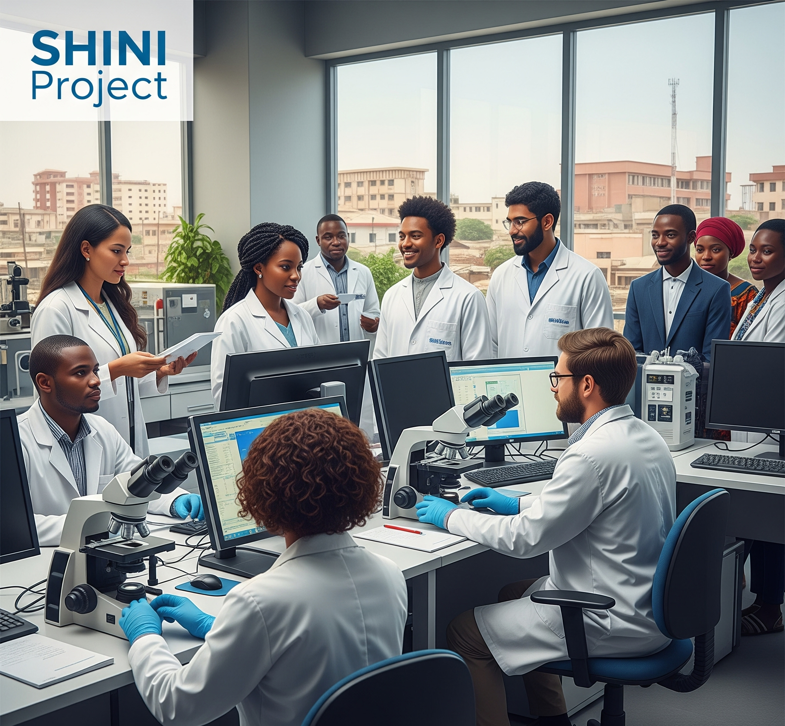
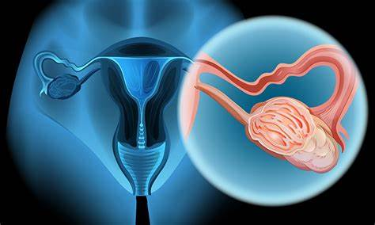
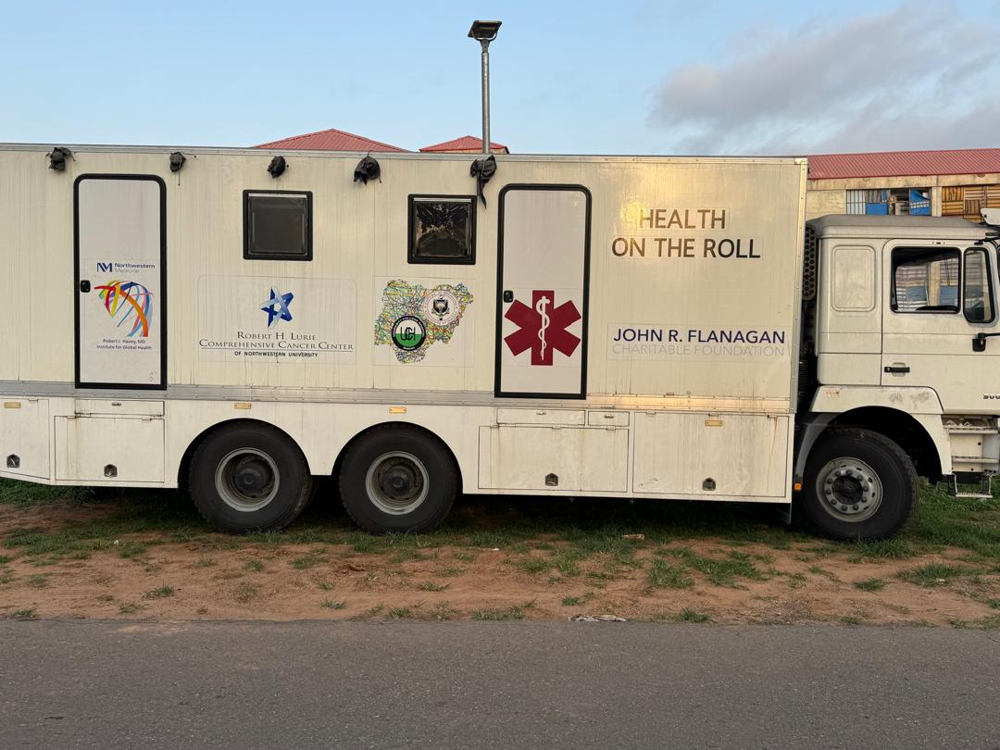
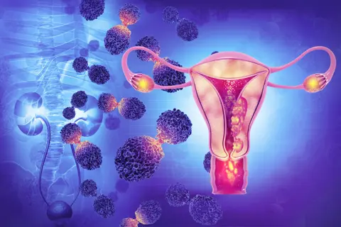

Our Projects
SHINI PROJECT
This study is popularly known as Sexual behaviour and HPV Infection in Nigerians in Ibadan (SHINI) Project. The study described risk factors for genital, oral and anal sexual intercourse, and association of these behaviours on the prevalence of genital, oral and anal human papillomavirus (HPV) infections among different heterosexual populations in Nigeria. The study enrolled adolescent/young adults, adults, and brothel-based female sex workers (FSW). In the phase 1, formative research (focus group discussions (FGD) and in-depth interviews (IDI)) explored knowledge, socio-cultural interpretations, local terminologies, and personal experiences on different sexual behaviours in the community. This was followed by phase 2 - cross-sectional survey - that involved household sampling of adolescents/young adults and adults, and brothel sampling of FSWs for face-to-face interview, clinical examination and collection of samples. Blood samples were collected for human immunodeficiency virus (HIV) testing. Samples from the oral cavity, the genital area (vulva, cervix and penis) – and anal canal were collected for HPV DNA genotyping in the laboratory. The was conducted in communities within Ibadan metropolis, located in southwestern Nigeria.


EpOOCH Study
This project focuses on identifying epigenetic biomarkers specific to HIV-associated oral and oropharyngeal cancer (OOPC) by comparing non-HPV-infected OOPC cases with HIV-infected, cancer-free people living with HIV (PLWH) in Nigeria, a country with a high prevalence of HIV. Most prior studies on epigenetic markers of OOPC included few HPV-infected cases with HIV, leaving a large and problematic gap in our current understanding of how these infections interact to promote OOPC in the population that is most severely affected by it, and the epigenomic mechanisms that might be involved. This is a four-year ongoing project funded by NIH/NCI in collaboration with Northwestern university, Chicago, USA. The study has four main objectives: (1) to characterize oral HPV infection and its risk factors in a Nigerian population with high HPV/HIV co-infection rates; (2) to investigate epigenomic mechanisms underlying HPV and HIV co-infection in OOPC pathogenesis; (3) to assess how antiretroviral therapy (ART) influences DNAm biomarkers in HPV-associated OOPC and premalignant disorders (OPMD); and (4) to identify novel epigenetic biomarkers predictive of OOPC development through a longitudinal study. This longitudinal study involve the recruitment of HIV-positive men and women attending HIV clinics in Ibadan and five neighboring states. Participants will be classified into four groups: (1) HPV-positive OOPC (n=150); (2) HPV-negative OOPC (n=150); (3) HPV-positive with benign warts (n=100); and (4) HPV-positive with OPMDs (n=400). Recruitment will be conducted at the University College Hospital, Ibadan, and 10 satellite tertiary hospitals in Southwest Nigeria. Additionally, HIV-negative controls (OOPC patients with and without HPV, n=50 each) will be matched by age and sex from the existing SHINI cohort. Participants undergo structured interviews and multiple follow-up visits. Biological samples from oral and oropharyngeal sites are collected and tested for HPV DNA genotyping. A subset of DNA samples undergo epigenome-wide association studies (EWAS) to identify CpG sites associated with cancer, HPV infection, and HIV infection using linear regression models. The expected outcomes include to determine high-risk HPV patterns in OOPCs among PLWH, identifying epigenetic markers predictive of OPMD progression, and biomarkers associated with aggressive OOPCs. The secondary outcome is to develop an algorithm for OPMDs that could progress to OOPCs.
WASH-CC Study
WASH-CC study is an ongoing implementation science project funded by NIH/NCI in collaboration with Northwestern university, Chicago, USA. Approximately 60% of all cervical cancer (CC) cases occur in women living with HIV/AIDS (WLWHA). While self-sampling-based HPV (SS-HPV) tests offer a cost-effective and feasible method for detecting hr-HPV infections in women who require further diagnostics and treatment, this approach remains underutilized in low- and middle-income countries (LMICs), including Sub-Saharan Africa (SSA), where HIV prevalence is high. To address this gap, the proposed West African Self-Sampling HPV-Based Cervical Cancer Control Program (WASH-CC) will be implemented in Mali and Nigeria. The project capitalizes on existing strengths and resources including the HIV systems of care with Community Health Workers (CHWs) who have established relationships with WLWHA and can provide HPV and CC education/counselling and SS specimen collection guidance, rapid transportation of specimens to hospital laboratories, personalized delivery of test results directly to the women, and facilitation of clinic referrals for women with hr-HPV for advanced diagnostics and treatment. The study is an implementation science that involve qualitative methods (focus group discussions (FGD) or Key informant interviews (KII) and hybrid type II for in-depth assessment of barriers, challenges, and needs to contextually adapt, implement, and evaluate the effectiveness and success of WASH-CC. At the Ibadan site, participants will be recruited from the Antiretroviral Therapy Clinic at the Infectious Disease Institute and nearby HIV clinics. The project will: (1) Assess barriers and needs for contextual adaptations of WASH-CC among WLWHA in Mali and Nigeria, using qualitative risk assessment and observation methods; (2) Contextually adapt, using a learning collaborative approach (e.g., monthly webinars, rapid-cycle small tests of change) and an implementation framework (e.g., training for competency of CHWs, data coordination across settings, implementation dashboard) to optimize the WASH-CC across all four sites; and (3) Conduct a dual evaluation of the effectiveness (e.g., % WLWHA fully screened and % change in) and implementation (e.g., reach, adoption, implementation fidelity, and maintenance or sustainability) and develop a “WASH-CC Scale-Up Toolkit” for wide dissemination of this “detect-to-treat” program that can be expanded to HIV-women and across LMICs. Qualitative data were analyzed by experienced social scientist using both deductive and inductive approaches with MAXQDA software while quantitative data were analyzed using descriptive statistics and McNemar tests for paired data to determine whether each woman’s self-reported prior (“pre” CC) screening is associated with current screening success. Logistic regression models with effectiveness outcomes (e.g. recruitment or screening success, yes vs. no) as the outcome variable and exploratory variables to measure effectiveness. Our primary effectiveness outcome measures includes: (1) proportion of WLWHA who are fully screened and (2) % change in WLWHA receiving any type of CC screening, defined as (a) visual inspection of the cervix with acetic acid and Lugol’s iodine (VIA/VILI), (b) Pap smear, or (c) HPV testing of cervicovaginal samples relative to the prior 3 years. Pre-implementation CC screening data will be gathered from all WLWHA at the study sites who are approached for recruitment and multiple process measures outcomes will be collected. The implementation outcomes are based on the RE-AIM framework.
.png)

the IMPROVE HPV
The IMPROVE-HPV Project is a public health research and community engagement initiative designed to understand the drivers of HPV vaccination hesitancy, assess the impact of vaccination strategy to reduce vaccination hesitancy and improve uptake of HPV vaccines in East and West Africa. Global health guidelines recommend that boys and girls receive the vaccine between the ages of 9 and 19 to ensure maximum protection. Despite this, HPV vaccination coverage in Sub-Saharan Africa including Nigeria, remains low due to a combination of limited awareness, widespread misinformation, stigma, myths, and barriers such as poor access to healthcare services. The IMPROVE-HPV Project seeks to address these challenges by implementing a comprehensive approach that includes research, education, and collaboration with key stakeholders. The project is committed to increasing community knowledge about HPV, its link to cervical cancer, and the benefits of vaccination. In addition to raising awareness, a major goal is to improve uptake of the HPV vaccine among adolescents girls ages 15-17 years and boys ages 16-19. The project also works to identify and reduce barriers to vaccination by addressing misconceptions, stigma, and structural obstacles that prevent access to the vaccine. Through close collaboration with parents, communities, health workers, schools, religious leaders, and policymakers, the project aims to strengthen local vaccination programs and foster a supportive environment for HPV prevention. A range of activities is being implemented to achieve these goals, including community surveys to assess the impact of HPV vaccination strategy, including single-dose and gender-neutral strategies, attitudes, and perceptions about HPV and vaccination, as well as focus group discussions and interviews with parents, adolescents, and other stakeholders to better understand their concerns and expectations. IMPROVE-HPV Project is being implemented in three states across Nigeria: Osun State in the South-West, Nasarawa State in the North-Central, and Jigawa State in the North-West. Within these states, the project is working in both urban and rural Local Government Areas (LGAs) to ensure that adolescents and their families, regardless of where they live, have equitable access to life-saving information and vaccination services. After successful implementation of the project we expect to have a significant increase in HPV vaccination uptake; improved vaccination policy and practices across health systems; better public awareness and reduced vaccine hesitancy as well as increased community support for vaccination efforts; and enhanced cross-sector collaboration to foster increased cooperation among diverse sectors, including government, healthcare, education, CBOs and NGOs, united by the common objective of improving public health outcomes related to HPV infection and its sequelae.
METAGENOMICS
Cervical and ovarian cancers account for the major burden of gynaecological cancer incidence, prevalence, and deaths among Nigerian women, with case-fatality of over 60% of new cases. Many variables confound pathogenesis and treatment outcome of both cancers. There is a paucity of research data on how to modify the disease progression, response to treatment and treatment outcomes. The microenvironment of cancer tissues is colonized by a variety of microbial organisms that profoundly affect their pathogenesis, perhaps making it more aggressive and resistant to conventional treatment. The total microbiota can be determined through metagenomic studies that will reveal the various micro-organisms within the cancer tissue that modulate its progression and modify its response to treatment. The microbiome may also influence the histopathogenesis of the cancer cells, affecting the way the cancer cells differentiate and the grade of the cancer. All these ultimately influence how aggressive cancer is and its response to treatment. This project is funded by Nigeria TETFUND.
By determining the total microbiota of cervical and ovarian cancer tissues among Nigerian women, comparison between immunocytological and epigenetic changes of these two (mostly epithelial) cancers can be used to determine the histopathogenesis diversity effect on different cancer types. It will also help to show the diversity in epigenetic changes that may have been produced because of the effect of microbiome in the microenvironment of cancer cells, and in turns facilitate the identification of the possible effect of modifying the microbiome on the pathogenesis of cancers, and hence the effect on treatment outcomes. Understanding the role of microbiota mechanisms and their diversity in ovarian and cervical cancers will help to redefine treatment by adding microbiome modifiers to improve the outcome of care of these cancers.
The goal of the study is to compare the effect of total microbiota on the pathogenesis and epigenetic changes of cervical and ovarian cancers; and how these can be used to improve treatment outcomes of these cancers.
This is a case control study that involve internal comparison between normal, premalignant, and malignant cervical cancer cells, and between normal and malignant ovarian tissue, in order to understand the effect of microbiome on the pathogenesis of cervical and ovarian cancers among Nigerian women as a sample of Indigenous African Ancestry.
Expected Outcomes:
To determine:
1) The histopathogenesis and epigenetics of cervical and ovarian cancers can be modulated by modifying their total microbiota
2) To understand how to modify the total microbiota of cervical and ovarian cancers to improve treatment outcomes.


MOBILE CLINIC
Humam papillomavirus (HPV) and Non-Communicable Diseases (NCDs) such as diabetes, hypertension, and various cancers are major contributors to morbidity and mortality in low- and middle-income countries (LMICs). Sub-Saharan Africa bears a disproportionate burden due to limited access to early screening, diagnostic services, and treatment. Some cancers are largely caused by persistent HPV infection. Current health infrastructure challenges necessitate alternative delivery models like mobile clinics to enhance healthcare access, reduce diagnostic delays, and improve health outcomes. The project proposes a novel but evidence-proven approach for population-level high-risk HPV and NCDs screening. Self-collected swabs (cervico-vaginal, anal, and penile) have been shown to result in high-quality, accurate high-risk HPV detection and they—along with the use of mobile clinics—have the potential to overcome many individual and system-level barriers. A mixed-methods approach will guide implementation, combining qualitative stakeholder engagement with quantitative epidemiological data. The qualitative phase includes key informant interviews, in-depth interview and consultative meetings to tailor interventions culturally and operationally. The quantitative arm involves community-based cross-sectional screening using mobile clinics (hospital-on-wheels) in selected urban and rural local government areas of Oyo State, Nigeria. Briefly, the project will: (1) Removing the need for pelvic, penile, or anal exams to obtain a clinician-collected specimen by a clinician of the opposite sex, a cultural/religious barrier in most of Sub-Saharan Africa, for both women and men; (2) Eliminating travel time to clinics and the financial burden of a clinic visit for individuals either due to cost, necessary childcare or needed time off work; and (3) Overcoming systemic barriers such as, overburdened clinics and lack of supplies and equipment The analysis of qualitative data will be conducted by experienced social scientist using both deductive and inductive methods with MAXQDA software for coding. For the quantitative data, the statistical analysis will primarily concentrate on estimation and will be largely descriptive. The mobile clinic outcomes will be summarized as percentages and reported by the relevant confidence intervals. Logistic regression models will utilize effectiveness outcomes (such as recruitment or screening success, yes vs. no) as the dependent variable and exploratory variables to evaluate effectiveness. Our primary effectiveness outcome measures will be proportion of individual who are fully screened for HPV and NCDs. The project will bridge gaps in HPV and NCDs screening, raise public awareness, strengthen health system capacity, and inform scalable policy interventions across LGAs in Oyo state. Participants will benefit from free diagnostics, counseling, and treatment for HPV-related conditions and NCDs, potentially reducing the burden of preventable diseases and improving population health outcomes.
BIGCaT
There is emerging evidence that HPV-associated anal precancer and cancer are increasingly being reported, particularly among women with history of high-risk HPV (hrHPV) infections, premalignant or cancer of the cervix who had no history of anal sex. However, there is no scientific evidence to justify advocating screening for anal hrHPV infections in women presenting for cervical HPV screening in future, particularly in countries like Nigeria where there is limited access and infrastructure to support multiple visits and screening for cancers in women. The proposed research plan is to evaluate epigenetic biomarkers to explain biological insights on the mechanism of HPV infection and identify the HPV-infected people who are at risk of progression to invasive cervical and anal cancers by conducting a secondary laboratory analysis of biological samples collected and stored from the Sexual Behaviors and HPV infections in Nigerians in Ibadan (SHINI) study. This study is ongoing and uses existing blood, cervical and anal swab samples and data collected by the principal investigator for his PhD program from SHINI study, to test this hypothesis. SHINI provides one of the largest data in West Africa on HPV infections from cervical and anogenital sites among sexually active men and women aged 18-45 years. In this secondary study, we will include two groups: 1) Women with hrHPV infection in the Cervix and Anus (n=100); and 2) Women that have hrHPV in the cervix only (no cancer or precancer) (n=100). We hypothesize that the DNAm in the blood and/or anal swab could predict the susceptibility of women with no history of anal sex to acquire hrHPV in the anus of those that have hrHPV in the cervix. The study will involve Next generation sequencing using PCR technique separately in the blood and anal swab samples collected from the same participants using linear regression to examine the relationships between DNAm markers and the risk of anal hrHPV infection status. We will compare the consistencies and differences of the association between two GWAS. All linear regression models will adjust for age, BMI, sexual behavior, tobacco use, alcohol intake, and HIV-related factors. We will also adjust for technical bias principal components using the built-in non-negative control probes. We will use the Benjamini and Hochberg False Discovery Rate (FDR) controlling procedure to correct for multiple comparisons. Unique gene symbols associated with the differentially methylated CpG sites (e.g., at FDR less than 0.05) will be annotated with protein-coding and transcriptional regulatory regions to understand their potential biological function. Top differentially methylated CpGs will be selected by penalized regression (e.g., elastic net) to build three prediction model: blood DNAm model, anal swab DNAm model, and blood + anal swab DNAm model. We will evaluate the accuracy of these three models with Receiver Operating Characteristics (ROC) curves. The study will analyze results generated and published findings in high-impact peer review journals. This research will probably present the first evidence on whether anal swab/ blood epigenetic biomarkers could explain the mechanism of concurrent or sequential risk of anal hrHPV in women with cervical hrHPV.
